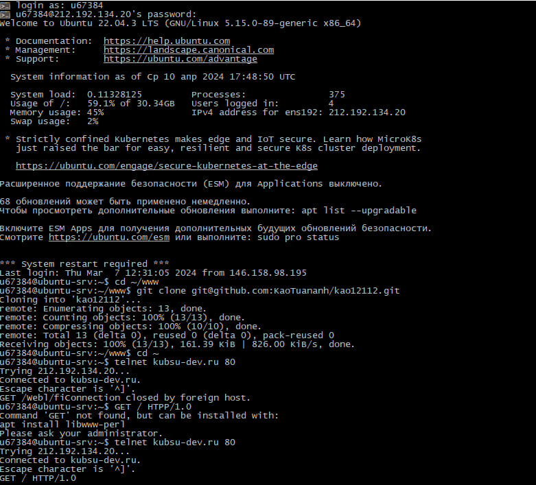
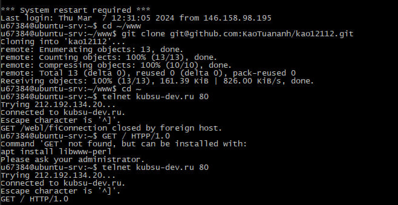
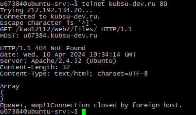
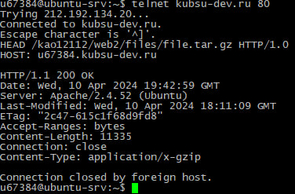
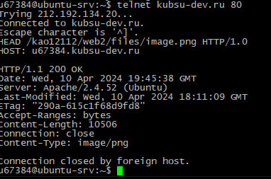
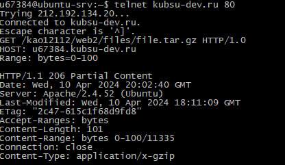
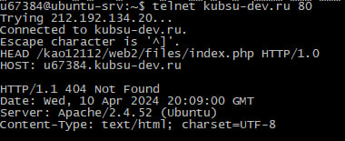

0.Подключение к учебному серверу kubsu-dev.ru по протоколу SSH с помощью клиента Putty по ip 212.192.134.20 и порту 22

1.1.Применяем команды "telnet kubsu-dev.ru 80" для подключения к Telnet по ip "kubsu-dev.ru" и порту 80
1.2.Получение главной страницы методом GET в протоколе HTTP 1.0

2.1.Применяем команды "telnet kubsu-dev.ru 80" для подключения к Telnet по ip "kubsu-dev.ru" и порту 80
2.2.Получение внутренней страницы методом GET в протоколе HTTP 1.1

3.1.Применяем команды "telnet kubsu-dev.ru 80" для подключения к Telnet по ip "kubsu-dev.ru" и порту 80
3.2.Определение размера файла "file.tar.gz", не скачивая его, с помощью метода HEAD в протоколе HTTP 1.0 в загаловке "Content-Lenght", где и хранится размер файла

4.1.Применяем команды "telnet kubsu-dev.ru 80" для подключения к Telnet по ip "kubsu-dev.ru" и порту 80
4.2.Определение медиатипа ресурса /image.png, с помощью метода HEAD в протоколе HTTP 1.0 в загаловке "Content-type", где и хранится медиатип файла

5.1.Применяем команды "telnet kubsu-dev.ru 80" для подключения к Telnet по ip "kubsu-dev.ru" и порту 80
5.2.Отправка комментария на сервер по адресу /index.php

6.1.Применяем команды "telnet kubsu-dev.ru 80" для подключения к Telnet по ip "kubsu-dev.ru" и порту 80
6.2.Получение первые 100 байт файла /file.tar.gz, с помощью метода GET в протоколе HTTP 1.0 используя заголовок "Range" задаем начальные 100 байт которые иинужно скачать

7.1.Применяем команды "telnet kubsu-dev.ru 80" для подключения к Telnet по ip "kubsu-dev.ru" и порту 80
7.2.Определение кодировки ресурса /index.php, с помощью метода HEAD в протоколе HTTP 1.0 в загаловке "Content-type", где и хранится тип кодировки файла, после его медиатипа
